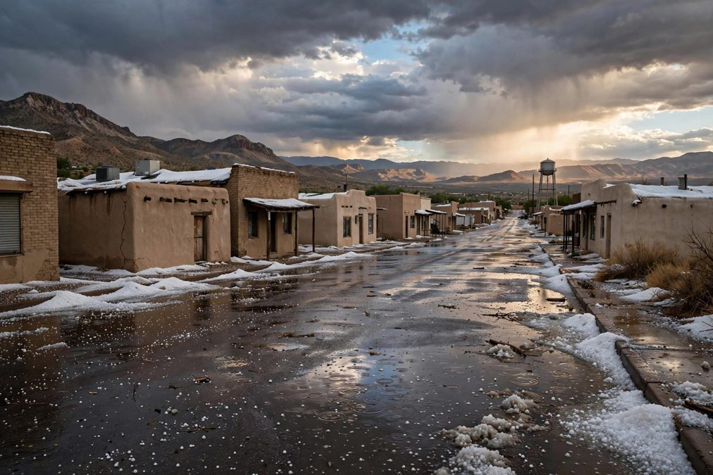

पुष्ट टॉरनेडो डेमिंग की ओर बढ़ा, ओलों ने लूना काउंटी में छतों और कारों को नुकसान पहुंचाया
एल पासो स्थित राष्ट्रीय मौसम सेवा ने सोमवार शाम डेमिंग के पश्चिम में ज़मीन पर टॉरनेडो की पुष्टि की और उसे शहर की ओर बढ़ता बताया, जबकि गोल्फ़ बॉल जितने बड़े ओलों ने लूना काउंटी भर में छतों, स्काइलाइट और वाहनों को नुकसान पहुंचाया। सोमवार देर रात तक टॉरनेडो की श्रेणी तय नहीं हुई थी और नुकसान का पूरा आकलन बाकी था।

मुख्य बिंदु
- राष्ट्रीय मौसम सेवा, एल पासो ने कहा कि एक पुष्ट टॉरनेडो सोमवार शाम डेमिंग के पश्चिम में ज़मीन पर उतरा और पूर्व की ओर शहर की तरफ बढ़ा, जबकि एक तेज़ तूफ़ान ने दक्षिणपश्चिमी न्यू मेक्सिको की लूना…
- आपात प्रबंधन अधिकारियों ने डेमिंग से करीब आठ मील पश्चिम में ज़मीन पर टॉरनेडो की पुष्टि की, जिसके बाद मौसम सेवा ने शाम 5:50 बजे MDT पर मध्य लूना काउंटी के लिए टॉरनेडो चेतावनी जारी की। टॉरनेडो करीब…
- तूफ़ान दोपहर से ही बन रहा था। मौसम सेवा ने दोपहर 4:27 बजे MDT पर दक्षिण मध्य ग्रांट काउंटी के लिए तेज़ तूफ़ान की चेतावनी जारी की, फिर 4:56 बजे ग्रांट और लूना काउंटी के लिए एक और चेतावनी जारी हुई,…
राष्ट्रीय मौसम सेवा, एल पासो ने कहा कि एक पुष्ट टॉरनेडो सोमवार शाम डेमिंग के पश्चिम में ज़मीन पर उतरा और पूर्व की ओर शहर की तरफ बढ़ा, जबकि एक तेज़ तूफ़ान ने दक्षिणपश्चिमी न्यू मेक्सिको की लूना काउंटी भर में इतने बड़े ओले गिराए कि स्काइलाइट टूट गए और वाहन दब गए।
आपात प्रबंधन अधिकारियों ने डेमिंग से करीब आठ मील पश्चिम में ज़मीन पर टॉरनेडो की पुष्टि की, जिसके बाद मौसम सेवा ने शाम 5:50 बजे MDT पर मध्य लूना काउंटी के लिए टॉरनेडो चेतावनी जारी की। टॉरनेडो करीब 25 मील प्रति घंटे की रफ़्तार से पूर्व की ओर बढ़ रहा था, जिससे डेमिंग सीधे उसके रास्ते में आ गया। शाम 6:02 बजे मौसम सेवा ने चेतावनी अद्यतन की और डेमिंग के पास पुष्ट टॉरनेडो के अब भी पूर्व की ओर बढ़ने की जानकारी दी। चेतावनी शाम 6:15 बजे समाप्त हो गई। चेतावनी के पाठ में कहा गया था कि तूफ़ान उड़ता मलबा फेंक सकता है, इमारतों और वाहनों को नुकसान पहुंचा सकता है, पेड़ गिरा सकता है और मोबाइल घरों को नुकसान पहुंचा सकता है या नष्ट कर सकता है।
ज़्यादातर नुकसान ओलों ने किया
तूफ़ान दोपहर से ही बन रहा था। मौसम सेवा ने दोपहर 4:27 बजे MDT पर दक्षिण मध्य ग्रांट काउंटी के लिए तेज़ तूफ़ान की चेतावनी जारी की, फिर 4:56 बजे ग्रांट और लूना काउंटी के लिए एक और चेतावनी जारी हुई, जब तूफ़ान गेज से 10 मील पश्चिम में था और 25 मील प्रति घंटे से पूर्व की ओर बढ़ रहा था। उस चेतावनी में दो इंच के ओले और 60 मील प्रति घंटे के हवा के झोंके बताए गए थे, और यह इंटरस्टेट 10 के माइल मार्कर 48 से 72 तक के हिस्से पर लागू थी। टॉरनेडो चेतावनी के दौरान जारी एक अलग तेज़ तूफ़ान चेतावनी ने ख़तरे को 70 मील प्रति घंटे के झोंकों और गोल्फ़ बॉल जितने ओलों तक बढ़ा दिया।
डेमिंग न्यूज़ ने सोमवार रात क्षेत्र भर में व्यापक संपत्ति नुकसान की जानकारी दी, जिसका ज़्यादातर हिस्सा तूफ़ान के साथ आए ओलों से हुआ। निवासियों ने बताया कि भारी ओले छतों पर बरसे और वाहनों से टकराए। रिपोर्टों में घरों की छतें खराब होने, स्काइलाइट टूटने और ऑटोमोबाइल क्षतिग्रस्त होने का ज़िक्र था, और सोमवार देर रात तक तबाही का पूरा आकलन जारी था।
पश्चिम की ओर बाढ़ और ओलों से ढकी सड़कें
इसी तूफ़ान प्रणाली ने डेमिंग के पश्चिम में गाड़ी चलाना ख़तरनाक बना दिया। न्यू मेक्सिको परिवहन विभाग ने इंटरस्टेट 10 पर सेपार से गेज तक, माइल मार्कर 42 से 63 तक, कठिन ड्राइविंग स्थितियों की जानकारी दी, जहाँ गोल्फ़ बॉल से बेसबॉल जितने बड़े ओलों ने सड़क ढक दी थी और चालकों से सावधानी बरतने को कहा गया था। और पश्चिम में, एनिमास के पास बाढ़ ने सड़कें बंद कर दीं। स्टेट रोड 9 माइल मार्कर 1.5 से 13 तक दोनों दिशाओं में पानी बहने से अगम्य हो गई, और स्टेट रोड 80 माइल मार्कर 4 से 7 तक पानी और गिरी हुई बिजली लाइनों से अवरुद्ध हो गई।
श्रेणी अभी बाकी है
सोमवार देर रात तक मौसम सेवा ने टॉरनेडो की श्रेणी तय नहीं की थी, और उसका अंतिम रास्ता और तीव्रता भी स्थापित नहीं हुई थी। आने वाले दिनों में होने वाला क्षति सर्वेक्षण यह नक्शा बना सकता है कि टॉरनेडो कहाँ से गुज़रा और कितना मज़बूत था। डेमिंग क्षेत्र में टॉरनेडो चेतावनियाँ असामान्य हैं, और यह तूफ़ान अक्टूबर में आया, जो न्यू मेक्सिको के पारंपरिक वसंत और गर्मी के गंभीर मौसम के मौसम से बाहर है। डेमिंग न्यूज़ ने संपत्ति मालिकों को सलाह दी कि स्थायी मरम्मत से पहले नुकसान की तस्वीरें लें, आपातकालीन काम की रसीदें रखें, और छतों और स्काइलाइट की जाँच करते समय टूटे काँच और ढीली छत सामग्री से सावधान रहें।
स्रोत
Deming News: Confirmed tornado near Deming brings dangerous hail and property damage to Luna County Grant County Beat: National Weather Service severe thunderstorm warning, October 19, 2026 The Daily Letter: Confirmed tornado near Deming, New Mexico, tornado warning for Luna County
टाइमलाइन
- Oct 19, 2026एल पासो स्थित राष्ट्रीय मौसम सेवा दोपहर में ग्रांट और लूना काउंटी के लिए तेज़ तूफ़ान की चेतावनियाँ जारी करती है, गेज के पास दो इंच के ओलों और 60 mph के हवा के झोंकों की चेतावनी के साथ।
- Oct 19, 2026शाम 5:50 बजे MDT पर, आपात प्रबंधन द्वारा डेमिंग से करीब आठ मील पश्चिम में ज़मीन पर टॉरनेडो की पुष्टि के बाद मौसम सेवा मध्य लूना काउंटी के लिए टॉरनेडो चेतावनी जारी करती है। टॉरनेडो 25 mph से पूर्व की ओर बढ़ रहा था।
- Oct 19, 2026चेतावनी शाम 6:02 बजे MDT पर डेमिंग के पास पुष्ट टॉरनेडो के साथ अद्यतन होती है और शाम 6:15 बजे MDT पर समाप्त हो जाती है। इसके बाद निवासी क्षेत्र भर में छतों, स्काइलाइट और वाहनों को ओलों से हुए नुकसान की जानकारी देते हैं।